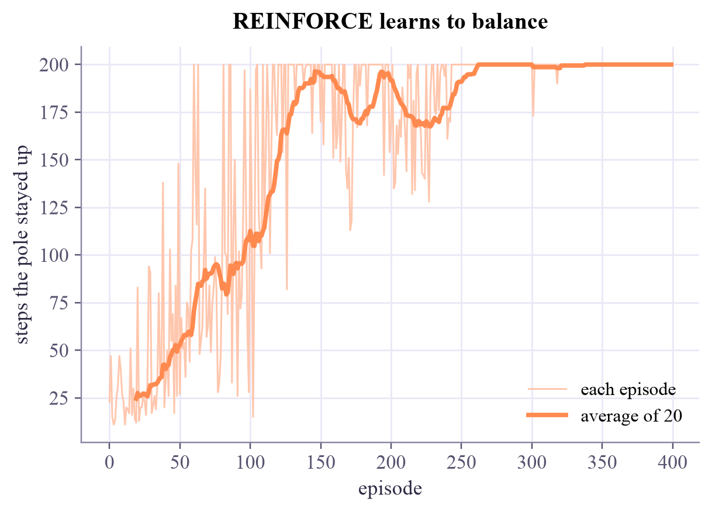

random pushing keeps the pole up for 19.25 steps on average (200 is the maximum)
Machine Learning
 about 14 min
about 14 min ml-w7d5.ipynb
ml-w7d5.ipynb
Policy gradients with PyTorch
Skip the values: let a neural network output the moves, and nudge it towards the moves that worked. A first deep-RL agent learns to balance a pole.
In this lesson you will
- Represent a policy as a neural network that outputs action probabilities
- Explain REINFORCE: make actions more likely in proportion to the return that followed
- Train a cart-pole policy in PyTorch and read what it learned
Warm-up
1 minToo many states for a table

The cat world had 30 squares, so a table of values fit on one screen. A pole balancing on a cart is described by four real numbers: position, speed, angle and spin. That's infinitely many states, and no table can hold them. Today a neural network becomes the policy, and the ideas of the whole course meet: networks, gradients, Adam, and rewards.
Big idea
4 minPush up the moves that paid off
A policy network takes the state and outputs a probability for each action, through a softmax (week 3). Here: 4 numbers in, "push left" and "push right" out. The goal is to make the expected return as large as possible by gradient ascent on the weights .
The policy gradient theorem gives a gradient we can estimate from episodes we play:
Read it as: for every action we took, push its log-probability up in proportion to how good the return after it was. Actions followed by long balancing become more likely; actions before a fall become less likely. That's REINFORCE. In PyTorch it's a loss, , and the usual loss.backward().
Returns are noisy, so we compare each one with the episode's average (a baseline) and rescale: better-than-average moves get pushed up, worse ones down. Returns are computed backwards, , as on Monday.
Value-based (Q-learning)
Learn how good each action is, then act greedily. Great for small, discrete problems.
Policy-based (REINFORCE)
Learn the action probabilities directly. Works with huge or continuous state spaces, and naturally keeps exploring by sampling.
Modern agents (in games, robotics, and the "RL from human feedback" that tunes chatbots) combine both ideas, but REINFORCE is the core of them.
Play, score every move by the return that followed, and nudge the network towards the better moves: that's a policy gradient.
Play
4 minYou against the network
Try to balance the pole yourself (slow motion helps!). Then watch the network from the notebook at four moments of its training, running live in your browser.
Try this
How long can you last? Random pushing manages about 20 steps. Then compare the untrained network, the one after 50 episodes and the final one. Watch the bar: the trained network often changes its mind several times a second, nudging the cart under the pole.
Code
2 minREINFORCE in PyTorch
The notebook for this lessonEvery code cell below, with what it printed, is in
ml-w7d5.ipynb. To change the code and run it yourself, open the notebook in Google Colab (free, in your browser) or download it for your own Jupyter.import numpy as np
import torch
import matplotlib.pyplot as plt
torch.set_num_threads(1)
class CartPole:
"""The classic cart-pole (Barto, Sutton and Anderson, 1983). State: cart position and velocity,
pole angle and angular velocity. Reward +1 per step; the episode ends when the pole tips past
12 degrees, the cart leaves the track, or after 200 steps (4 seconds)."""
g, m_cart, m_pole, half_length, force, dt = 9.8, 1.0, 0.1, 0.5, 10.0, 0.02
def __init__(self, rng, max_steps=200):
self.rng, self.max_steps = rng, max_steps
def reset(self):
self.state, self.t = self.rng.uniform(-0.05, 0.05, 4), 0
return self.state.copy()
def step(self, action): # action 0: push left, 1: push right
x, x_dot, theta, theta_dot = self.state
f = self.force if action == 1 else -self.force
cos, sin = np.cos(theta), np.sin(theta)
total = self.m_cart + self.m_pole
temp = (f + self.m_pole * self.half_length * theta_dot ** 2 * sin) / total
theta_acc = (self.g * sin - cos * temp) / (self.half_length * (4 / 3 - self.m_pole * cos ** 2 / total))
x_acc = temp - self.m_pole * self.half_length * theta_acc * cos / total
self.state = np.array([x + self.dt * x_dot, x_dot + self.dt * x_acc,
theta + self.dt * theta_dot, theta_dot + self.dt * theta_acc])
self.t += 1
fell = abs(self.state[0]) > 2.4 or abs(self.state[2]) > 12 * np.pi / 180
return self.state.copy(), 1.0, fell or self.t >= self.max_steps
env = CartPole(np.random.default_rng(0))
lengths = []
for episode in range(20):
state, done, n = env.reset(), False, 0
while not done:
state, reward, done = env.step(int(np.random.default_rng(episode * 1000 + n).integers(2)))
n += 1
lengths.append(n)
print("random pushing keeps the pole up for", np.mean(lengths), "steps on average (200 is the maximum)")What it printed in the notebook
torch.manual_seed(3)
policy = torch.nn.Sequential(torch.nn.Linear(4, 32), torch.nn.Tanh(), torch.nn.Linear(32, 2))
state = torch.tensor(env.reset(), dtype=torch.float32)
probs = torch.softmax(policy(state), dim=0)
print("P(push left), P(push right) for a starting state:", probs.detach().numpy().round(3))
action = torch.distributions.Categorical(probs=probs).sample()
print("sampled action:", ["left", "right"][int(action)])What it printed in the notebook
P(push left), P(push right) for a starting state: [0.593 0.407] sampled action: right
def train(episodes=400, lr=0.005, gamma=0.99, seed=3):
rng = np.random.default_rng(seed)
torch.manual_seed(seed)
env = CartPole(rng)
policy = torch.nn.Sequential(torch.nn.Linear(4, 32), torch.nn.Tanh(), torch.nn.Linear(32, 2))
optimizer = torch.optim.Adam(policy.parameters(), lr=lr)
lengths, checkpoints = [], {0: [p.detach().clone() for p in policy.parameters()]}
for episode in range(1, episodes + 1):
state, done, log_probs, rewards = env.reset(), False, [], []
while not done:
dist = torch.distributions.Categorical(logits=policy(torch.tensor(state, dtype=torch.float32)))
action = dist.sample()
log_probs.append(dist.log_prob(action))
state, reward, done = env.step(int(action))
rewards.append(reward)
G, returns = 0.0, []
for r in reversed(rewards): # returns, from the end backwards
G = r + gamma * G
returns.append(G)
returns = torch.tensor(returns[::-1])
returns = (returns - returns.mean()) / (returns.std() + 1e-8) # better than average: +, worse: -
loss = -(torch.stack(log_probs) * returns).sum()
optimizer.zero_grad()
loss.backward()
optimizer.step()
lengths.append(len(rewards))
if episode in (50, 150, episodes):
checkpoints[episode] = [p.detach().clone() for p in policy.parameters()]
return policy, lengths, checkpoints
policy, lengths, checkpoints = train()
smooth = np.convolve(lengths, np.ones(20) / 20, mode="valid")
plt.plot(lengths, color="#ffc7ae", lw=1, label="each episode")
plt.plot(np.arange(19, len(lengths)), smooth, color="#ff8a50", lw=2.5, label="average of 20")
plt.xlabel("episode")
plt.ylabel("steps the pole stayed up")
plt.title("REINFORCE learns to balance")
plt.legend()
plt.show()What it printed in the notebook

test_env = CartPole(np.random.default_rng(42), max_steps=1000)
results = []
for _ in range(10):
state, done, n = test_env.reset(), False, 0
while not done:
with torch.no_grad():
action = int(policy(torch.tensor(state, dtype=torch.float32)).argmax())
state, _, done = test_env.step(action)
n += 1
results.append(n)
print("steps balanced in 10 test runs (max 1000):", results)What it printed in the notebook
steps balanced in 10 test runs (max 1000): [1000, 628, 1000, 1000, 478, 1000, 874, 701, 1000, 1000]
Your turn
2 minYour turn: what did the network learn?
Ask the trained network for in a few hand-made states. Does it push the way you would?
def p_right(x, x_dot, theta, theta_dot):
return 0.5 # TODO: softmax of policy(torch.tensor([...], dtype=torch.float32)), take entry 1
deg = np.pi / 180
for name, s in [("leaning left", (0, 0, -5 * deg, 0)), ("upright", (0, 0, 0, 0)), ("leaning right", (0, 0, 5 * deg, 0)),
("right, swinging back left", (0, 0, 3 * deg, -1.0))]:
print(f"{name:26s} P(push right) = {p_right(*s):.3f}")Need a hint?
torch.softmax(policy(torch.tensor([x, x_dot, theta, theta_dot], dtype=torch.float32)), dim=0)[1], inside with torch.no_grad():.
Show a solution
def p_right(x, x_dot, theta, theta_dot):
with torch.no_grad():
return float(torch.softmax(policy(torch.tensor([x, x_dot, theta, theta_dot], dtype=torch.float32)), dim=0)[1])
deg = np.pi / 180
for name, s in [("leaning left", (0, 0, -5 * deg, 0)), ("upright", (0, 0, 0, 0)), ("leaning right", (0, 0, 5 * deg, 0)),
("right, swinging back left", (0, 0, 3 * deg, -1.0))]:
print(f"{name:26s} P(push right) = {p_right(*s):.3f}")
print("It pushes towards the side the pole is falling to, and it watches the swing (the angular velocity)")
print("even more than the angle: move the cart under where the pole is going, not where it is.")What it printed in the notebook
leaning left P(push right) = 0.148 upright P(push right) = 0.312 leaning right P(push right) = 0.544 right, swinging back left P(push right) = 0.000 It pushes towards the side the pole is falling to, and it watches the swing (the angular velocity) even more than the angle: move the cart under where the pole is going, not where it is.
Check yourself
1 minQuick check
Question 1 of 3
What does a policy network output?
Question 2 of 3
In REINFORCE, an action was followed by a return well above the episode's average. What happens to it?
Question 3 of 3
Why can't the cart-pole use a Q-table like the cat world?
Wrap-up
1 minThis week in one sentence
Quantum link
Replace the policy network with a parameterized quantum circuit whose measurement probabilities are the action probabilities, and you have a quantum policy. Its gradient needs the parameter-shift rule from the Quantum Computing tutorial's last week. And Quantum ML training itself is the same game as today: noisy estimates, gradients, and patience.
Go deeper (optional)
Sutton and Barto, chapter 13 (policy gradient methods), with REINFORCE and baselines in sections 13.3 and 13.4. The original: Williams, "Simple statistical gradient-following algorithms for connectionist reinforcement learning" (Machine Learning, 1992). The cart-pole comes from Barto, Sutton and Anderson (1983).
That's the whole Machine Learning tutorial! Saturday: the graduation flashback. Once both tutorials are done, the Quantum ML tutorial puts both halves together.

That's the lesson!
Tap the button to save it. Short and steady wins.
Marked by mistake? Undo